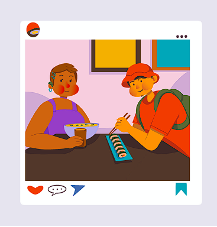
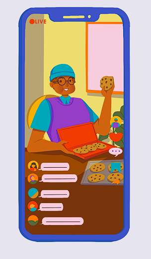

Internet es una tecnología que ha impactado principalmente a los adolescentes y ha brindado muchos beneficios. Sin embargo, algunas personas han pasado mucho tiempo navegando en la internet, lo que demuestra que los estudiantes son incapaces de controlar su tiempo y pueden poner en peligro sus trabajos, sus estudios e incluso sus relaciones personales.
Analizar el comportamiento y uso de las redes sociales en los jóvenes de 13 a 17 años de edad de algunos colegios, para determinar el impacto que tienen estos medios en dicha población.
Se utiliza la metodología DESARROLLO Mixta, por que permite realizar el tipo de investigación de manera cualitativa y cuantitativamente, ya que brinda la información suficiente para dicha investigación.
Conociendo los riesgos de las redes sociales, el proyecto evidencia las problemáticas sociales que generan las nuevas tecnologías, tales como: afectar su autoestima, alterar sus horarios de sueño, generar depresión, ansiedad, bajo rendimiento académico, etc. No obstante, son beneficiosas, para el uso académico, la comunicación entre familiares y amigos lejanos, aprender nuevos idiomas y crear su propio emprendimiento.
